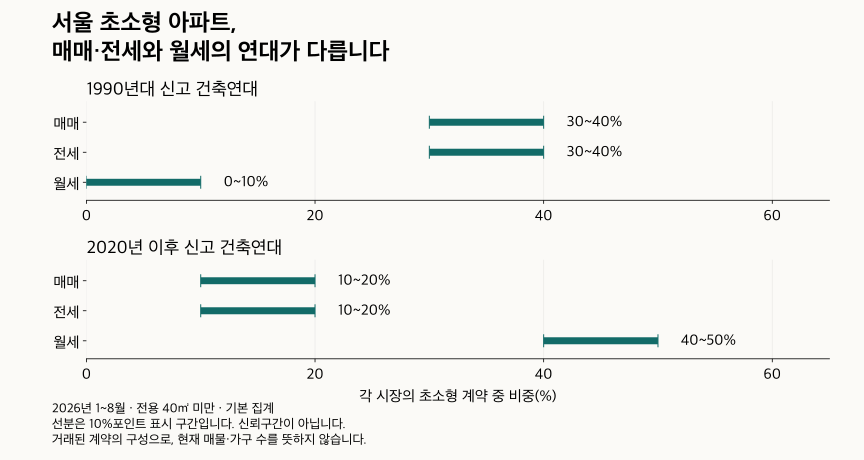

단지 조건 비교 · 초소형 거래 지도
전용 40㎡ 미만 초소형 아파트, 매매·전월세는 어디에 몰렸을까?
초소형 아파트의 매매·전세·월세 거래 지역과 신고 건축연대를 비교합니다. 전용 40㎡ 미만의 기준, 임대차 비중의 분모와 현재 유형 확인 표본의 차이를 확인하세요.
분석 기간 · 매매 2010년·전월세 2011년부터 2026년 9월까지 · 끝월 잠정 | 자료 기준일 · 거래 2026-10-04 · 현재 유형 2026-10-02
전용 40㎡ 미만 아파트를 찾는다면, 매매와 월세의 거래 지도를 따로 볼 필요가 있습니다. 2026년 1~8월 서울에서 초소형 매매는 노원구가 16~18%, 초소형 전세는 강남구가 16~18%를 차지했습니다. 분모는 각각 서울의 초소형 매매·전세 계약입니다. 같은 작은 집이라도 거래 종류에 따라 눈에 띄는 지역과 건축연대가 다릅니다.
전용 40㎡ 미만이면 모두 도시형 생활주택인가요?
아닙니다. 이 글의 ‘초소형’은 분석을 위해 정한 실제 전용면적이 0㎡보다 크고 40㎡보다 작은 계약입니다. 정확히 40.00㎡인 계약은 주 비교에서 제외합니다. 공급면적이나 상품명의 평수를 대신 사용하지 않습니다.
도시형 생활주택은 면적 하나로 판정하는 이름이 아닙니다. 주택법 시행령 제10조의 주택 종류·규모 등 요건을 확인해야 합니다. 도시형 생활주택과 아파트가 서로 배타적인 유형인 것도 아닙니다. 자료에 ‘도시형 생활주택(아파트)’라는 표기가 있더라도, 그 이름만으로 개별 건물의 과거 법적 용도까지 확정하지 않습니다.
분석 대상은 국토교통부의 아파트 실거래 자료에 수록된 계약입니다. 오피스텔·다세대 등 작은 주택 전부를 모은 비교가 아닙니다. 작은 집을 찾는 독자라도 법적 용도가 다른 물건을 같은 표로 비교하면 안 됩니다.
이하 수치는 구간으로 표시합니다. 지역 분포는 2%포인트, 시장 안의 초소형 비중과 임대차 비중은 5%포인트, 연대·유형·확인 비중은 10%포인트 폭입니다. 양 끝을 포함해 보수적으로 읽고, 구간이 겹치거나 닿으면 엄격한 대소를 확정하지 않습니다. 구간의 가운데가 정확한 값은 아니며 신뢰구간도 아닙니다.
매매·전세·월세는 같은 지역에 몰렸나요?
같은 지역 지도가 아닙니다. 서울의 초소형 매매에서 노원구는 16~18%, 강서구는 10~12%입니다. 초소형 전세에서는 강남구 16~18%, 강서구 14~16%, 노원구 10~12%입니다. 강남구와 강서구의 전세 구간은 끝점이 닿으므로 이 표시만으로 정확한 순서를 단정하지 않습니다.
서울의 초소형 월세는 중랑구 8~10%, 강서·강남·강동구 각각 6~8% 구간입니다. 수집 경기의 월세에서는 평택시 16~18%, 남양주시 12~14%, 파주·동탄구 각각 6~8%입니다. 지역의 이름이 같아도 현재 경계로 묶은 과거 계약이며, 수집 경기는 경기 전체를 뜻하지 않습니다.
| 지역 | 매매 | 전세 | 월세 |
|---|---|---|---|
| 종로구 | 0~2 | 0~2 | 0~2 |
| 중구 | 2~4 | 2~4 | 2~4 |
| 용산구 | 0~2 | 0~2 | 2~4 |
| 성동구 | 비교 유보 | 0~2 | 2~4 |
| 광진구 | 0~2 | 0~2 | 2~4 |
| 동대문구 | 4~6 | 2~4 | 4~6 |
| 중랑구 | 8~10 | 4~6 | 8~10 |
| 성북구 | 0~2 | 2~4 | 2~4 |
| 강북구 | 0~2 | 0~2 | 0~2 |
| 도봉구 | 4~6 | 2~4 | 0~2 |
| 노원구 | 16~18 | 10~12 | 4~6 |
| 은평구 | 2~4 | 2~4 | 4~6 |
| 서대문구 | 0~2 | 0~2 | 2~4 |
| 마포구 | 2~4 | 0~2 | 4~6 |
| 양천구 | 비교 유보 | 비교 유보 | 2~4 |
| 강서구 | 10~12 | 14~16 | 6~8 |
| 구로구 | 4~6 | 4~6 | 4~6 |
| 금천구 | 0~2 | 0~2 | 2~4 |
| 영등포구 | 4~6 | 4~6 | 4~6 |
| 동작구 | 2~4 | 0~2 | 2~4 |
| 관악구 | 2~4 | 0~2 | 4~6 |
| 서초구 | 2~4 | 4~6 | 2~4 |
| 강남구 | 6~8 | 16~18 | 6~8 |
| 송파구 | 6~8 | 6~8 | 4~6 |
| 강동구 | 4~6 | 2~4 | 6~8 |
수집 경기 36개 지역의 위치 비교 펼치기
| 지역 | 매매 | 전세 | 월세 |
|---|---|---|---|
| 수원시 장안구 | 0~2 | 2~4 | 0~2 |
| 수원시 권선구 | 0~2 | 0~2 | 2~4 |
| 수원시 팔달구 | 4~6 | 6~8 | 2~4 |
| 수원시 영통구 | 0~2 | 0~2 | 2~4 |
| 성남시 수정구 | 0~2 | 0~2 | 2~4 |
| 성남시 중원구 | 2~4 | 0~2 | 0~2 |
| 성남시 분당구 | 8~10 | 12~14 | 2~4 |
| 의정부시 | 4~6 | 4~6 | 4~6 |
| 안양시 만안구 | 4~6 | 0~2 | 0~2 |
| 안양시 동안구 | 12~14 | 16~18 | 2~4 |
| 부천시 원미구 | 4~6 | 4~6 | 2~4 |
| 부천시 소사구 | 0~2 | 0~2 | 0~2 |
| 부천시 오정구 | 0~2 | 비교 유보 | 2~4 |
| 광명시 | 4~6 | 6~8 | 0~2 |
| 평택시 | 12~14 | 6~8 | 16~18 |
| 안산시 상록구 | 2~4 | 2~4 | 0~2 |
| 안산시 단원구 | 4~6 | 4~6 | 0~2 |
| 고양시 덕양구 | 0~2 | 2~4 | 2~4 |
| 고양시 일산동구 | 0~2 | 2~4 | 0~2 |
| 고양시 일산서구 | 비교 유보 | 0~2 | 0~2 |
| 과천시 | 비교 유보 | 비교 유보 | 0~2 |
| 구리시 | 2~4 | 2~4 | 0~2 |
| 남양주시 | 2~4 | 0~2 | 12~14 |
| 군포시 | 4~6 | 4~6 | 0~2 |
| 의왕시 | 비교 유보 | 0~2 | 0~2 |
| 하남시 | 0~2 | 0~2 | 2~4 |
| 용인시 처인구 | 0~2 | 0~2 | 0~2 |
| 용인시 기흥구 | 0~2 | 0~2 | 0~2 |
| 용인시 수지구 | 0~2 | 0~2 | 0~2 |
| 파주시 | 0~2 | 0~2 | 6~8 |
| 김포시 | 비교 유보 | 비교 유보 | 2~4 |
| 화성시 만세구 | 비교 유보 | 비교 유보 | 2~4 |
| 화성시 효행구 | 0~2 | 0~2 | 0~2 |
| 화성시 병점구 | 비교 유보 | 비교 유보 | 0~2 |
| 화성시 동탄구 | 비교 유보 | 비교 유보 | 6~8 |
| 광주시 | 0~2 | 비교 유보 | 0~2 |
이 표의 분모는 같은 기간·같은 광역 범위·같은 시장의 초소형 계약입니다. 서울 매매 열과 수집 경기 월세 열을 직접 비교해 거래량이 더 많다고 말할 수 없습니다. 지역 인구나 주택 수로 나눈 값도 아닙니다.
‘그 지역에서 초소형이 흔한가’는 또 다른 질문입니다. 아래 표는 각 지역의 매매·전세·월세 전체 면적을 각각 분모로 삼습니다. 넓은 지역에서 거래가 많이 잡히는 효과와, 그 지역 안에서 작은 면적이 차지하는 비중을 나눠 보세요.
서울 25개 구 안에서 초소형이 차지하는 비중
| 지역 | 매매 | 전세 | 월세 |
|---|---|---|---|
| 종로구 | 15~20 | 5~10 | 50~55 |
| 중구 | 10~15 | 10~15 | 35~40 |
| 용산구 | 0~5 | 0~5 | 20~25 |
| 성동구 | 비교 유보 | 0~5 | 20~25 |
| 광진구 | 5~10 | 0~5 | 35~40 |
| 동대문구 | 5~10 | 5~10 | 40~45 |
| 중랑구 | 15~20 | 5~10 | 55~60 |
| 성북구 | 0~5 | 0~5 | 25~30 |
| 강북구 | 0~5 | 5~10 | 45~50 |
| 도봉구 | 5~10 | 5~10 | 25~30 |
| 노원구 | 10~15 | 5~10 | 25~30 |
| 은평구 | 5~10 | 0~5 | 45~50 |
| 서대문구 | 0~5 | 0~5 | 35~40 |
| 마포구 | 5~10 | 0~5 | 30~35 |
| 양천구 | 비교 유보 | 비교 유보 | 15~20 |
| 강서구 | 10~15 | 10~15 | 35~40 |
| 구로구 | 5~10 | 5~10 | 20~25 |
| 금천구 | 0~5 | 5~10 | 45~50 |
| 영등포구 | 5~10 | 5~10 | 30~35 |
| 동작구 | 5~10 | 0~5 | 30~35 |
| 관악구 | 5~10 | 5~10 | 45~50 |
| 서초구 | 5~10 | 0~5 | 10~15 |
| 강남구 | 15~20 | 10~15 | 20~25 |
| 송파구 | 5~10 | 5~10 | 20~25 |
| 강동구 | 5~10 | 0~5 | 35~40 |
수집 경기 36개 지역 안에서 초소형이 차지하는 비중
| 지역 | 매매 | 전세 | 월세 |
|---|---|---|---|
| 수원시 장안구 | 0~5 | 5~10 | 5~10 |
| 수원시 권선구 | 0~5 | 0~5 | 10~15 |
| 수원시 팔달구 | 5~10 | 10~15 | 35~40 |
| 수원시 영통구 | 0~5 | 0~5 | 15~20 |
| 성남시 수정구 | 0~5 | 0~5 | 25~30 |
| 성남시 중원구 | 5~10 | 0~5 | 15~20 |
| 성남시 분당구 | 10~15 | 5~10 | 15~20 |
| 의정부시 | 0~5 | 5~10 | 25~30 |
| 안양시 만안구 | 5~10 | 5~10 | 35~40 |
| 안양시 동안구 | 10~15 | 15~20 | 25~30 |
| 부천시 원미구 | 5~10 | 5~10 | 30~35 |
| 부천시 소사구 | 0~5 | 0~5 | 15~20 |
| 부천시 오정구 | 5~10 | 비교 유보 | 45~50 |
| 광명시 | 5~10 | 5~10 | 10~15 |
| 평택시 | 5~10 | 5~10 | 30~35 |
| 안산시 상록구 | 5~10 | 5~10 | 15~20 |
| 안산시 단원구 | 5~10 | 5~10 | 20~25 |
| 고양시 덕양구 | 0~5 | 0~5 | 20~25 |
| 고양시 일산동구 | 0~5 | 0~5 | 10~15 |
| 고양시 일산서구 | 비교 유보 | 0~5 | 0~5 |
| 과천시 | 비교 유보 | 비교 유보 | 20~25 |
| 구리시 | 0~5 | 5~10 | 15~20 |
| 남양주시 | 0~5 | 0~5 | 25~30 |
| 군포시 | 5~10 | 5~10 | 15~20 |
| 의왕시 | 비교 유보 | 0~5 | 15~20 |
| 하남시 | 0~5 | 0~5 | 20~25 |
| 용인시 처인구 | 0~5 | 0~5 | 15~20 |
| 용인시 기흥구 | 0~5 | 0~5 | 10~15 |
| 용인시 수지구 | 0~5 | 0~5 | 10~15 |
| 파주시 | 0~5 | 0~5 | 25~30 |
| 김포시 | 비교 유보 | 비교 유보 | 15~20 |
| 화성시 만세구 | 비교 유보 | 비교 유보 | 35~40 |
| 화성시 효행구 | 0~5 | 0~5 | 20~25 |
| 화성시 병점구 | 비교 유보 | 비교 유보 | 15~20 |
| 화성시 동탄구 | 비교 유보 | 비교 유보 | 20~25 |
| 광주시 | 0~5 | 비교 유보 | 5~10 |
비교 유보는 거래가 없거나 가장 적다는 뜻이 아닙니다. 구간으로 표시할 조건을 충족하지 못한 경우를 같은 표시로 남겼습니다. 지역 전체의 정확한 순위를 만들거나 빈칸을 0으로 채우지 않습니다.
초소형 계약의 85~90%가 임대차라면, 월세가 그만큼 많다는 뜻인가요?
아닙니다. 이 글의 임대차 비중은 (전세+월세) ÷ (매매+전세+월세)입니다. 같은 면적·지역·기간의 관측 계약을 합친 비율입니다. 반면 전월세 통계의 월세 비중은 보통 월세 ÷ (전세+월세)입니다. 분모가 다른 질문입니다.
| 지역 | 매매 중 초소형 | 전세 중 초소형 | 월세 중 초소형 | 전체 면적 임대차 비중 | 초소형 임대차 비중 |
|---|---|---|---|---|---|
| 서울 | 5~10 | 5~10 | 30~35 | 75~80 | 85~90 |
| 수집 경기 | 0~5 | 0~5 | 20~25 | 60~65 | 85~90 |
2026년 1~8월 서울에서는 전체 면적의 임대차 비중이 75~80%, 초소형은 85~90%입니다. 수집 경기는 각각 60~65%, 85~90%입니다. 두 범위 모두 초소형의 임대차 비중이 더 높은 구간입니다. 그러나 이 결과를 ‘초소형 주택의 85~90%에 세입자가 산다’로 바꿀 수는 없습니다.
한 집이 여러 번 계약되거나 갱신될 수 있고, 매매와 임대차는 기록되는 경로가 다릅니다. 거래되지 않은 집은 분모에 없습니다. 이 비율은 임대 주택 재고, 임차 가구 수, 공실률이나 수익률을 측정하지 않습니다.
초소형 월세는 매매·전세와 건축연대도 다른가요?
최근 서울 표본에서는 차이가 뚜렷합니다. 1990년대 신고 건축연대의 비중은 초소형 매매·전세가 각각 30~40%, 월세가 0~10%입니다. 반대로 2020년 이후는 매매·전세가 각각 10~20%, 월세가 40~50%입니다. 작은 전용면적이라는 공통점만으로 같은 주택 구성을 가정하기 어렵습니다.

| 지역 | 신고 건축연대 | 매매 | 전세 | 월세 |
|---|---|---|---|---|
| 서울 | 1990년 이전 | 10~20 | 10~20 | 0~10 |
| 서울 | 1990년대 | 30~40 | 30~40 | 0~10 |
| 서울 | 2000년대 | 10~20 | 10~20 | 0~10 |
| 서울 | 2010년대 | 20~30 | 20~30 | 30~40 |
| 서울 | 2020년 이후 | 10~20 | 10~20 | 40~50 |
| 서울 | 미상 | 0~10 | 0~10 | 0~10 |
| 수집 경기 | 1990년 이전 | 0~10 | 0~10 | 0~10 |
| 수집 경기 | 1990년대 | 40~50 | 40~50 | 10~20 |
| 수집 경기 | 2000년대 | 0~10 | 0~10 | 0~10 |
| 수집 경기 | 2010년대 | 20~30 | 10~20 | 40~50 |
| 수집 경기 | 2020년 이후 | 10~20 | 20~30 | 30~40 |
| 수집 경기 | 미상 | 0~10 | 0~10 | 0~10 |
수집 경기에서도 1990년대는 초소형 매매·전세 각각 40~50%, 월세 10~20%입니다. 다만 서울의 2020년 이후 월세 구성을 경기 전체에 그대로 적용하지는 마세요. 지역별 입지와 물건 구성, 관측 방식이 함께 다릅니다.
여기서는 각 실거래 원자료에 신고된 건축연도를 사용했습니다. 단지 연결이 안 된 임대차도 신고 연도가 확인되면 연대 비교에 남깁니다. 미상·유효하지 않은 연도는 다른 자료의 연도로 채우지 않았습니다. 신고 건축연도는 법적 사용승인일이나 실제 입주 시작일을 증명하는 자료가 아닙니다.
현재 단지 유형이 확인되는 계약만 남기면 더 정확해지나요?
정보가 많은 계약으로 표본이 좁아집니다. 이를 전체 시장의 정확한 보정값이라고 부를 수는 없습니다. 초소형 월세는 현재 단지 연결과 유형 정보가 덜 확인되는 부분이 커, 확인된 물건만 남기는 선택에 특히 주의해야 합니다.
| 지역 | 시장 | 단지 확인 | 신고 연대 확인 | 현재 단지 연대 확인 | 선택한 현재 유형 확인 |
|---|---|---|---|---|---|
| 서울 | 매매 | 90~100 | 90~100 | 90~100 | 50~60 |
| 서울 | 전세 | 90~100 | 90~100 | 90~100 | 50~60 |
| 서울 | 월세 | 50~60 | 90~100 | 50~60 | 30~40 |
| 수집 경기 | 매매 | 90~100 | 90~100 | 90~100 | 70~80 |
| 수집 경기 | 전세 | 90~100 | 90~100 | 90~100 | 60~70 |
| 수집 경기 | 월세 | 40~50 | 90~100 | 40~50 | 20~30 |
2026년 1~8월 서울 월세의 현재 단지 연대 확인 비중은 50~60%, 수집 경기는 40~50%입니다. 반면 원자료 신고 연대 확인은 두 지역 모두 90~100% 구간입니다. 현재 단지 정보만 이용하면 건축연대를 확인할 수 있는 계약까지 상당 부분 놓칠 수 있습니다. 90~100%를 정확한 100%로 읽지는 마세요.
현재 단지 건축연대로 바꾼 비교 보기
| 지역 | 현재 단지 건축연대 | 매매 | 전세 | 월세 |
|---|---|---|---|---|
| 서울 | 1990년 이전 | 10~20 | 10~20 | 0~10 |
| 서울 | 1990년대 | 30~40 | 30~40 | 0~10 |
| 서울 | 2000년대 | 10~20 | 10~20 | 0~10 |
| 서울 | 2010년대 | 20~30 | 10~20 | 20~30 |
| 서울 | 2020년 이후 | 10~20 | 10~20 | 10~20 |
| 서울 | 미상 | 0~10 | 0~10 | 40~50 |
| 수집 경기 | 1990년 이전 | 0~10 | 0~10 | 0~10 |
| 수집 경기 | 1990년대 | 40~50 | 40~50 | 0~10 |
| 수집 경기 | 2000년대 | 0~10 | 0~10 | 0~10 |
| 수집 경기 | 2010년대 | 20~30 | 10~20 | 20~30 |
| 수집 경기 | 2020년 이후 | 10~20 | 20~30 | 0~10 |
| 수집 경기 | 미상 | 0~10 | 0~10 | 50~60 |
현재 유형 확인 비교에는 ‘아파트’, ‘주상복합’, ‘도시형 생활주택(아파트)’, ‘도시형 생활주택(주상복합)’으로 연결된 계약만 남겼습니다. 주 비교에서는 유형 미기재·미연결과 다른 표기 계약도 별도로 유지합니다. 다음 표는 현재 연결 자료의 표기이며, 거래 당시의 법적 주택 유형 분포를 확정한 표가 아닙니다.
현재 유형 표기와 미확인 사유 모두 보기
| 지역 | 현재 유형 표기·미확인 사유 | 매매 | 전세 | 월세 |
|---|---|---|---|---|
| 서울 | 아파트 | 40~50 | 40~50 | 10~20 |
| 서울 | 주상복합 | 10~20 | 0~10 | 10~20 |
| 서울 | 도시형 생활주택(아파트) | 0~10 | 0~10 | 0~10 |
| 서울 | 도시형 생활주택(주상복합) | 0~10 | 0~10 | 0~10 |
| 서울 | 도시형 생활주택(연립주택) | 0~10 | 0~10 | 0~10 |
| 서울 | 연립주택 | 0~10 | 0~10 | 0~10 |
| 서울 | 현재 사용승인일 정보 충돌 | 비교 유보 | 비교 유보 | 0~10 |
| 서울 | 현재 유형 자료 미연결 | 40~50 | 30~40 | 20~30 |
| 서울 | 단지 확인 불가 | 0~10 | 0~10 | 40~50 |
| 서울 | 현재 유형 미기재 | 0~10 | 비교 유보 | 비교 유보 |
| 수집 경기 | 아파트 | 50~60 | 50~60 | 10~20 |
| 수집 경기 | 주상복합 | 10~20 | 0~10 | 10~20 |
| 수집 경기 | 도시형 생활주택(아파트) | 0~10 | 0~10 | 0~10 |
| 수집 경기 | 도시형 생활주택(주상복합) | 0~10 | 0~10 | 0~10 |
| 수집 경기 | 도시형 생활주택(연립주택) | 0~10 | 0~10 | 0~10 |
| 수집 경기 | 연립주택 | 0~10 | 0~10 | 0~10 |
| 수집 경기 | 현재 사용승인일 정보 충돌 | 0~10 | 0~10 | 0~10 |
| 수집 경기 | 현재 유형 자료 미연결 | 20~30 | 20~30 | 10~20 |
| 수집 경기 | 단지 확인 불가 | 0~10 | 0~10 | 50~60 |
| 수집 경기 | 현재 유형 미기재 | 비교 유보 | 0~10 | 0~10 |
이 선택을 적용하면 초소형 임대차 비중은 수집 경기 75~80%로, 전체 초소형의 85~90%보다 낮은 구간입니다. 서울은 80~85%와 85~90%의 끝점이 닿아 엄격한 차이를 확정하지 않습니다. 미확인 계약을 빼는 것만으로 분모와 결과가 달라질 수 있음을 보여주는 비교입니다.
기간·면적·확인 표본·매매 제외 조건 비교 보기
| 기간 | 지역 | 매매 설정 | 전체 면적 | 40㎡ 미만 | 40㎡ 이하 | 현재 유형 확인 | 현재 연대 확인 |
|---|---|---|---|---|---|---|---|
| 같은 1~8월 | 서울 | 기본 | 75~80 | 85~90 | 85~90 | 80~85 | 80~85 |
| 같은 1~8월 | 서울 | 표시 해제·직거래 제외 | 75~80 | 85~90 | 85~90 | 80~85 | 80~85 |
| 같은 1~8월 | 수집 경기 | 기본 | 60~65 | 85~90 | 85~90 | 75~80 | 75~80 |
| 같은 1~8월 | 수집 경기 | 표시 해제·직거래 제외 | 65~70 | 85~90 | 85~90 | 75~80 | 75~80 |
| 같은 상반기 | 서울 | 기본 | 70~75 | 85~90 | 85~90 | 75~80 | 80~85 |
| 같은 상반기 | 서울 | 표시 해제·직거래 제외 | 75~80 | 85~90 | 85~90 | 80~85 | 80~85 |
| 같은 상반기 | 수집 경기 | 기본 | 60~65 | 85~90 | 85~90 | 75~80 | 75~80 |
| 같은 상반기 | 수집 경기 | 표시 해제·직거래 제외 | 65~70 | 85~90 | 85~90 | 75~80 | 75~80 |
| 같은 1~9월(끝월 잠정) | 서울 | 기본 | 75~80 | 85~90 | 85~90 | 80~85 | 80~85 |
| 같은 1~9월(끝월 잠정) | 서울 | 표시 해제·직거래 제외 | 75~80 | 85~90 | 85~90 | 80~85 | 80~85 |
| 같은 1~9월(끝월 잠정) | 수집 경기 | 기본 | 60~65 | 85~90 | 85~90 | 75~80 | 75~80 |
| 같은 1~9월(끝월 잠정) | 수집 경기 | 표시 해제·직거래 제외 | 65~70 | 85~90 | 85~90 | 75~80 | 75~80 |
최근 기간이나 정확히 40㎡를 포함하면 결과가 달라지나요?
완료된 연도와 같은 1~8월·상반기·1~9월을 나눠 비교했습니다. 아래 주 표는 매년 같은 1~8월입니다. 2026년 일부 기간을 과거 1년 전체와 나란히 놓아 성장률을 계산하지 않습니다. 매매는 2010년부터, 임대차는 2011년부터이며 2010년 임대차는 관측 없음으로 남깁니다.
| 연도 | 지역 | 매매 중 초소형 | 전세 중 초소형 | 월세 중 초소형 | 초소형 임대차 비중 |
|---|---|---|---|---|---|
| 2010 | 서울 | 5~10 | 관측 없음 | 관측 없음 | 관측 없음 |
| 2010 | 수집 경기 | 0~5 | 관측 없음 | 관측 없음 | 관측 없음 |
| 2011 | 서울 | 5~10 | 0~5 | 15~20 | 75~80 |
| 2011 | 수집 경기 | 0~5 | 0~5 | 10~15 | 60~65 |
| 2012 | 서울 | 5~10 | 0~5 | 15~20 | 75~80 |
| 2012 | 수집 경기 | 0~5 | 0~5 | 10~15 | 70~75 |
| 2013 | 서울 | 5~10 | 0~5 | 20~25 | 75~80 |
| 2013 | 수집 경기 | 0~5 | 0~5 | 10~15 | 65~70 |
| 2014 | 서울 | 5~10 | 5~10 | 15~20 | 75~80 |
| 2014 | 수집 경기 | 0~5 | 0~5 | 10~15 | 65~70 |
| 2015 | 서울 | 5~10 | 5~10 | 10~15 | 60~65 |
| 2015 | 수집 경기 | 0~5 | 0~5 | 10~15 | 60~65 |
| 2016 | 서울 | 5~10 | 5~10 | 10~15 | 65~70 |
| 2016 | 수집 경기 | 0~5 | 0~5 | 10~15 | 65~70 |
| 2017 | 서울 | 5~10 | 5~10 | 15~20 | 65~70 |
| 2017 | 수집 경기 | 0~5 | 0~5 | 10~15 | 70~75 |
| 2018 | 서울 | 5~10 | 5~10 | 15~20 | 70~75 |
| 2018 | 수집 경기 | 0~5 | 0~5 | 15~20 | 70~75 |
| 2019 | 서울 | 5~10 | 5~10 | 20~25 | 80~85 |
| 2019 | 수집 경기 | 0~5 | 0~5 | 15~20 | 80~85 |
| 2020 | 서울 | 5~10 | 5~10 | 20~25 | 75~80 |
| 2020 | 수집 경기 | 0~5 | 0~5 | 20~25 | 75~80 |
| 2021 | 서울 | 10~15 | 5~10 | 25~30 | 80~85 |
| 2021 | 수집 경기 | 0~5 | 5~10 | 20~25 | 80~85 |
| 2022 | 서울 | 20~25 | 5~10 | 25~30 | 90~95 |
| 2022 | 수집 경기 | 5~10 | 0~5 | 20~25 | 90~95 |
| 2023 | 서울 | 5~10 | 5~10 | 25~30 | 90~95 |
| 2023 | 수집 경기 | 0~5 | 0~5 | 20~25 | 90~95 |
| 2024 | 서울 | 5~10 | 5~10 | 30~35 | 90~95 |
| 2024 | 수집 경기 | 0~5 | 0~5 | 20~25 | 90~95 |
| 2025 | 서울 | 5~10 | 5~10 | 30~35 | 85~90 |
| 2025 | 수집 경기 | 0~5 | 0~5 | 20~25 | 90~95 |
| 2026 | 서울 | 5~10 | 5~10 | 30~35 | 85~90 |
| 2026 | 수집 경기 | 0~5 | 0~5 | 20~25 | 85~90 |
완료 연도의 시장별 비교 보기
| 연도 | 지역 | 매매 중 초소형 | 전세 중 초소형 | 월세 중 초소형 | 초소형 임대차 비중 |
|---|---|---|---|---|---|
| 2010 | 서울 | 5~10 | 관측 없음 | 관측 없음 | 관측 없음 |
| 2010 | 수집 경기 | 0~5 | 관측 없음 | 관측 없음 | 관측 없음 |
| 2011 | 서울 | 5~10 | 0~5 | 15~20 | 75~80 |
| 2011 | 수집 경기 | 0~5 | 0~5 | 10~15 | 60~65 |
| 2012 | 서울 | 5~10 | 0~5 | 15~20 | 75~80 |
| 2012 | 수집 경기 | 0~5 | 0~5 | 10~15 | 70~75 |
| 2013 | 서울 | 5~10 | 0~5 | 15~20 | 75~80 |
| 2013 | 수집 경기 | 0~5 | 0~5 | 10~15 | 65~70 |
| 2014 | 서울 | 5~10 | 5~10 | 15~20 | 70~75 |
| 2014 | 수집 경기 | 0~5 | 0~5 | 10~15 | 60~65 |
| 2015 | 서울 | 5~10 | 5~10 | 10~15 | 60~65 |
| 2015 | 수집 경기 | 0~5 | 0~5 | 10~15 | 60~65 |
| 2016 | 서울 | 5~10 | 5~10 | 10~15 | 65~70 |
| 2016 | 수집 경기 | 0~5 | 0~5 | 10~15 | 65~70 |
| 2017 | 서울 | 5~10 | 5~10 | 15~20 | 70~75 |
| 2017 | 수집 경기 | 0~5 | 0~5 | 15~20 | 70~75 |
| 2018 | 서울 | 5~10 | 5~10 | 15~20 | 75~80 |
| 2018 | 수집 경기 | 0~5 | 0~5 | 15~20 | 75~80 |
| 2019 | 서울 | 5~10 | 5~10 | 20~25 | 80~85 |
| 2019 | 수집 경기 | 0~5 | 0~5 | 15~20 | 80~85 |
| 2020 | 서울 | 5~10 | 5~10 | 20~25 | 80~85 |
| 2020 | 수집 경기 | 0~5 | 0~5 | 20~25 | 75~80 |
| 2021 | 서울 | 10~15 | 5~10 | 25~30 | 85~90 |
| 2021 | 수집 경기 | 5~10 | 0~5 | 20~25 | 80~85 |
| 2022 | 서울 | 20~25 | 5~10 | 25~30 | 90~95 |
| 2022 | 수집 경기 | 5~10 | 0~5 | 20~25 | 90~95 |
| 2023 | 서울 | 5~10 | 5~10 | 25~30 | 90~95 |
| 2023 | 수집 경기 | 0~5 | 0~5 | 25~30 | 90~95 |
| 2024 | 서울 | 5~10 | 5~10 | 30~35 | 90~95 |
| 2024 | 수집 경기 | 0~5 | 0~5 | 25~30 | 90~95 |
| 2025 | 서울 | 5~10 | 5~10 | 30~35 | 85~90 |
| 2025 | 수집 경기 | 0~5 | 0~5 | 25~30 | 90~95 |
같은 상반기의 시장별 비교 보기
| 연도 | 지역 | 매매 중 초소형 | 전세 중 초소형 | 월세 중 초소형 | 초소형 임대차 비중 |
|---|---|---|---|---|---|
| 2010 | 서울 | 5~10 | 관측 없음 | 관측 없음 | 관측 없음 |
| 2010 | 수집 경기 | 0~5 | 관측 없음 | 관측 없음 | 관측 없음 |
| 2011 | 서울 | 5~10 | 0~5 | 15~20 | 75~80 |
| 2011 | 수집 경기 | 0~5 | 0~5 | 10~15 | 60~65 |
| 2012 | 서울 | 5~10 | 0~5 | 15~20 | 75~80 |
| 2012 | 수집 경기 | 0~5 | 0~5 | 10~15 | 70~75 |
| 2013 | 서울 | 5~10 | 0~5 | 15~20 | 75~80 |
| 2013 | 수집 경기 | 0~5 | 0~5 | 10~15 | 65~70 |
| 2014 | 서울 | 5~10 | 5~10 | 15~20 | 75~80 |
| 2014 | 수집 경기 | 0~5 | 0~5 | 10~15 | 65~70 |
| 2015 | 서울 | 5~10 | 5~10 | 10~15 | 60~65 |
| 2015 | 수집 경기 | 0~5 | 0~5 | 10~15 | 60~65 |
| 2016 | 서울 | 5~10 | 5~10 | 10~15 | 65~70 |
| 2016 | 수집 경기 | 0~5 | 0~5 | 10~15 | 65~70 |
| 2017 | 서울 | 5~10 | 5~10 | 10~15 | 65~70 |
| 2017 | 수집 경기 | 0~5 | 0~5 | 10~15 | 70~75 |
| 2018 | 서울 | 5~10 | 5~10 | 15~20 | 75~80 |
| 2018 | 수집 경기 | 0~5 | 0~5 | 15~20 | 75~80 |
| 2019 | 서울 | 5~10 | 5~10 | 20~25 | 85~90 |
| 2019 | 수집 경기 | 0~5 | 0~5 | 15~20 | 80~85 |
| 2020 | 서울 | 5~10 | 5~10 | 20~25 | 75~80 |
| 2020 | 수집 경기 | 0~5 | 0~5 | 20~25 | 75~80 |
| 2021 | 서울 | 10~15 | 5~10 | 20~25 | 80~85 |
| 2021 | 수집 경기 | 5~10 | 5~10 | 20~25 | 75~80 |
| 2022 | 서울 | 20~25 | 5~10 | 25~30 | 90~95 |
| 2022 | 수집 경기 | 5~10 | 0~5 | 20~25 | 90~95 |
| 2023 | 서울 | 5~10 | 5~10 | 30~35 | 90~95 |
| 2023 | 수집 경기 | 0~5 | 0~5 | 20~25 | 90~95 |
| 2024 | 서울 | 5~10 | 5~10 | 30~35 | 90~95 |
| 2024 | 수집 경기 | 0~5 | 0~5 | 25~30 | 90~95 |
| 2025 | 서울 | 5~10 | 5~10 | 30~35 | 85~90 |
| 2025 | 수집 경기 | 0~5 | 0~5 | 20~25 | 90~95 |
| 2026 | 서울 | 5~10 | 5~10 | 30~35 | 85~90 |
| 2026 | 수집 경기 | 0~5 | 0~5 | 20~25 | 85~90 |
같은 1~9월(끝월 잠정)의 시장별 비교 보기
| 연도 | 지역 | 매매 중 초소형 | 전세 중 초소형 | 월세 중 초소형 | 초소형 임대차 비중 |
|---|---|---|---|---|---|
| 2010 | 서울 | 5~10 | 관측 없음 | 관측 없음 | 관측 없음 |
| 2010 | 수집 경기 | 0~5 | 관측 없음 | 관측 없음 | 관측 없음 |
| 2011 | 서울 | 5~10 | 0~5 | 15~20 | 75~80 |
| 2011 | 수집 경기 | 0~5 | 0~5 | 10~15 | 60~65 |
| 2012 | 서울 | 5~10 | 0~5 | 15~20 | 75~80 |
| 2012 | 수집 경기 | 0~5 | 0~5 | 10~15 | 70~75 |
| 2013 | 서울 | 5~10 | 0~5 | 15~20 | 75~80 |
| 2013 | 수집 경기 | 0~5 | 0~5 | 10~15 | 65~70 |
| 2014 | 서울 | 5~10 | 5~10 | 15~20 | 70~75 |
| 2014 | 수집 경기 | 0~5 | 0~5 | 10~15 | 60~65 |
| 2015 | 서울 | 5~10 | 5~10 | 10~15 | 60~65 |
| 2015 | 수집 경기 | 0~5 | 0~5 | 10~15 | 60~65 |
| 2016 | 서울 | 5~10 | 5~10 | 10~15 | 65~70 |
| 2016 | 수집 경기 | 0~5 | 0~5 | 10~15 | 65~70 |
| 2017 | 서울 | 5~10 | 5~10 | 15~20 | 70~75 |
| 2017 | 수집 경기 | 0~5 | 0~5 | 10~15 | 70~75 |
| 2018 | 서울 | 5~10 | 5~10 | 15~20 | 70~75 |
| 2018 | 수집 경기 | 0~5 | 0~5 | 15~20 | 70~75 |
| 2019 | 서울 | 5~10 | 5~10 | 20~25 | 80~85 |
| 2019 | 수집 경기 | 0~5 | 0~5 | 15~20 | 80~85 |
| 2020 | 서울 | 5~10 | 5~10 | 20~25 | 80~85 |
| 2020 | 수집 경기 | 0~5 | 0~5 | 20~25 | 75~80 |
| 2021 | 서울 | 10~15 | 5~10 | 25~30 | 80~85 |
| 2021 | 수집 경기 | 0~5 | 0~5 | 20~25 | 80~85 |
| 2022 | 서울 | 20~25 | 5~10 | 25~30 | 90~95 |
| 2022 | 수집 경기 | 5~10 | 0~5 | 20~25 | 90~95 |
| 2023 | 서울 | 5~10 | 5~10 | 25~30 | 90~95 |
| 2023 | 수집 경기 | 0~5 | 0~5 | 20~25 | 90~95 |
| 2024 | 서울 | 5~10 | 5~10 | 30~35 | 90~95 |
| 2024 | 수집 경기 | 0~5 | 0~5 | 20~25 | 90~95 |
| 2025 | 서울 | 5~10 | 5~10 | 30~35 | 85~90 |
| 2025 | 수집 경기 | 0~5 | 0~5 | 20~25 | 90~95 |
| 2026 | 서울 | 5~10 | 5~10 | 30~35 | 85~90 |
| 2026 | 수집 경기 | 0~5 | 0~5 | 20~25 | 85~90 |
초소형 월세의 건축연대 구성도 전체 기간을 따로 확인할 수 있습니다. 매년 같은 집을 추적한 결과가 아니므로, 특정 연대 비중의 증가를 그 연대 주택의 신규 공급량이나 수요 증가로 곧바로 읽지 않습니다.
완료 연도의 초소형 월세 건축연대 보기
| 연도 | 지역 | 1990년 이전 | 1990년대 | 2000년대 | 2010년대 | 2020년 이후 | 미상 |
|---|---|---|---|---|---|---|---|
| 2011 | 서울 | 10~20 | 30~40 | 40~50 | 0~10 | 0~10 | 0~10 |
| 2011 | 수집 경기 | 10~20 | 40~50 | 20~30 | 10~20 | 0~10 | 비교 유보 |
| 2012 | 서울 | 10~20 | 20~30 | 30~40 | 20~30 | 0~10 | 비교 유보 |
| 2012 | 수집 경기 | 10~20 | 30~40 | 30~40 | 10~20 | 0~10 | 비교 유보 |
| 2013 | 서울 | 10~20 | 20~30 | 20~30 | 30~40 | 0~10 | 0~10 |
| 2013 | 수집 경기 | 10~20 | 30~40 | 20~30 | 20~30 | 0~10 | 비교 유보 |
| 2014 | 서울 | 10~20 | 10~20 | 20~30 | 40~50 | 0~10 | 비교 유보 |
| 2014 | 수집 경기 | 10~20 | 30~40 | 20~30 | 30~40 | 0~10 | 비교 유보 |
| 2015 | 서울 | 10~20 | 20~30 | 20~30 | 30~40 | 0~10 | 비교 유보 |
| 2015 | 수집 경기 | 10~20 | 20~30 | 10~20 | 30~40 | 0~10 | 0~10 |
| 2016 | 서울 | 10~20 | 20~30 | 20~30 | 30~40 | 0~10 | 비교 유보 |
| 2016 | 수집 경기 | 0~10 | 20~30 | 10~20 | 40~50 | 0~10 | 비교 유보 |
| 2017 | 서울 | 0~10 | 20~30 | 20~30 | 40~50 | 0~10 | 0~10 |
| 2017 | 수집 경기 | 0~10 | 20~30 | 10~20 | 50~60 | 0~10 | 0~10 |
| 2018 | 서울 | 0~10 | 10~20 | 20~30 | 50~60 | 0~10 | 0~10 |
| 2018 | 수집 경기 | 0~10 | 10~20 | 10~20 | 50~60 | 0~10 | 0~10 |
| 2019 | 서울 | 0~10 | 10~20 | 10~20 | 50~60 | 0~10 | 0~10 |
| 2019 | 수집 경기 | 0~10 | 10~20 | 10~20 | 60~70 | 0~10 | 0~10 |
| 2020 | 서울 | 0~10 | 10~20 | 10~20 | 40~50 | 10~20 | 0~10 |
| 2020 | 수집 경기 | 0~10 | 0~10 | 10~20 | 50~60 | 10~20 | 0~10 |
| 2021 | 서울 | 0~10 | 10~20 | 10~20 | 40~50 | 20~30 | 0~10 |
| 2021 | 수집 경기 | 0~10 | 0~10 | 0~10 | 40~50 | 20~30 | 0~10 |
| 2022 | 서울 | 0~10 | 10~20 | 10~20 | 30~40 | 20~30 | 0~10 |
| 2022 | 수집 경기 | 0~10 | 0~10 | 0~10 | 30~40 | 30~40 | 0~10 |
| 2023 | 서울 | 0~10 | 10~20 | 10~20 | 30~40 | 30~40 | 0~10 |
| 2023 | 수집 경기 | 0~10 | 0~10 | 0~10 | 30~40 | 40~50 | 0~10 |
| 2024 | 서울 | 0~10 | 10~20 | 10~20 | 30~40 | 30~40 | 0~10 |
| 2024 | 수집 경기 | 0~10 | 0~10 | 0~10 | 40~50 | 40~50 | 비교 유보 |
| 2025 | 서울 | 0~10 | 0~10 | 0~10 | 30~40 | 30~40 | 비교 유보 |
| 2025 | 수집 경기 | 0~10 | 0~10 | 0~10 | 40~50 | 40~50 | 0~10 |
같은 1~8월의 초소형 월세 건축연대 보기
| 연도 | 지역 | 1990년 이전 | 1990년대 | 2000년대 | 2010년대 | 2020년 이후 | 미상 |
|---|---|---|---|---|---|---|---|
| 2011 | 서울 | 10~20 | 30~40 | 40~50 | 0~10 | 0~10 | 0~10 |
| 2011 | 수집 경기 | 10~20 | 40~50 | 20~30 | 10~20 | 0~10 | 비교 유보 |
| 2012 | 서울 | 10~20 | 20~30 | 30~40 | 10~20 | 0~10 | 0~10 |
| 2012 | 수집 경기 | 10~20 | 30~40 | 30~40 | 10~20 | 0~10 | 비교 유보 |
| 2013 | 서울 | 10~20 | 20~30 | 20~30 | 30~40 | 0~10 | 0~10 |
| 2013 | 수집 경기 | 10~20 | 30~40 | 20~30 | 20~30 | 0~10 | 비교 유보 |
| 2014 | 서울 | 10~20 | 10~20 | 20~30 | 40~50 | 0~10 | 비교 유보 |
| 2014 | 수집 경기 | 10~20 | 30~40 | 20~30 | 30~40 | 0~10 | 0~10 |
| 2015 | 서울 | 10~20 | 20~30 | 20~30 | 30~40 | 0~10 | 비교 유보 |
| 2015 | 수집 경기 | 10~20 | 20~30 | 10~20 | 30~40 | 0~10 | 비교 유보 |
| 2016 | 서울 | 10~20 | 20~30 | 20~30 | 30~40 | 0~10 | 비교 유보 |
| 2016 | 수집 경기 | 0~10 | 20~30 | 10~20 | 40~50 | 0~10 | 0~10 |
| 2017 | 서울 | 0~10 | 20~30 | 10~20 | 40~50 | 0~10 | 0~10 |
| 2017 | 수집 경기 | 0~10 | 20~30 | 10~20 | 50~60 | 0~10 | 비교 유보 |
| 2018 | 서울 | 0~10 | 10~20 | 20~30 | 50~60 | 0~10 | 비교 유보 |
| 2018 | 수집 경기 | 0~10 | 10~20 | 10~20 | 50~60 | 0~10 | 비교 유보 |
| 2019 | 서울 | 0~10 | 10~20 | 10~20 | 50~60 | 0~10 | 0~10 |
| 2019 | 수집 경기 | 0~10 | 10~20 | 10~20 | 60~70 | 0~10 | 0~10 |
| 2020 | 서울 | 0~10 | 10~20 | 20~30 | 40~50 | 10~20 | 0~10 |
| 2020 | 수집 경기 | 0~10 | 10~20 | 10~20 | 60~70 | 10~20 | 비교 유보 |
| 2021 | 서울 | 0~10 | 10~20 | 10~20 | 40~50 | 20~30 | 0~10 |
| 2021 | 수집 경기 | 0~10 | 10~20 | 0~10 | 40~50 | 20~30 | 0~10 |
| 2022 | 서울 | 0~10 | 10~20 | 10~20 | 30~40 | 20~30 | 0~10 |
| 2022 | 수집 경기 | 0~10 | 0~10 | 0~10 | 40~50 | 30~40 | 0~10 |
| 2023 | 서울 | 0~10 | 10~20 | 10~20 | 30~40 | 30~40 | 0~10 |
| 2023 | 수집 경기 | 0~10 | 0~10 | 0~10 | 40~50 | 40~50 | 비교 유보 |
| 2024 | 서울 | 0~10 | 10~20 | 10~20 | 30~40 | 30~40 | 0~10 |
| 2024 | 수집 경기 | 0~10 | 0~10 | 0~10 | 40~50 | 40~50 | 비교 유보 |
| 2025 | 서울 | 0~10 | 0~10 | 0~10 | 30~40 | 30~40 | 비교 유보 |
| 2025 | 수집 경기 | 0~10 | 0~10 | 0~10 | 40~50 | 30~40 | 0~10 |
| 2026 | 서울 | 0~10 | 0~10 | 0~10 | 30~40 | 40~50 | 0~10 |
| 2026 | 수집 경기 | 0~10 | 10~20 | 0~10 | 40~50 | 30~40 | 0~10 |
같은 상반기의 초소형 월세 건축연대 보기
| 연도 | 지역 | 1990년 이전 | 1990년대 | 2000년대 | 2010년대 | 2020년 이후 | 미상 |
|---|---|---|---|---|---|---|---|
| 2011 | 서울 | 10~20 | 30~40 | 40~50 | 0~10 | 0~10 | 0~10 |
| 2011 | 수집 경기 | 10~20 | 40~50 | 20~30 | 10~20 | 0~10 | 비교 유보 |
| 2012 | 서울 | 10~20 | 30~40 | 30~40 | 10~20 | 0~10 | 0~10 |
| 2012 | 수집 경기 | 10~20 | 30~40 | 30~40 | 10~20 | 0~10 | 비교 유보 |
| 2013 | 서울 | 10~20 | 20~30 | 20~30 | 30~40 | 0~10 | 0~10 |
| 2013 | 수집 경기 | 10~20 | 30~40 | 20~30 | 20~30 | 0~10 | 비교 유보 |
| 2014 | 서울 | 10~20 | 10~20 | 20~30 | 40~50 | 0~10 | 비교 유보 |
| 2014 | 수집 경기 | 10~20 | 30~40 | 20~30 | 30~40 | 0~10 | 0~10 |
| 2015 | 서울 | 10~20 | 20~30 | 20~30 | 30~40 | 0~10 | 비교 유보 |
| 2015 | 수집 경기 | 10~20 | 30~40 | 10~20 | 30~40 | 0~10 | 0~10 |
| 2016 | 서울 | 10~20 | 20~30 | 20~30 | 30~40 | 0~10 | 비교 유보 |
| 2016 | 수집 경기 | 0~10 | 20~30 | 10~20 | 40~50 | 0~10 | 0~10 |
| 2017 | 서울 | 10~20 | 20~30 | 10~20 | 40~50 | 0~10 | 비교 유보 |
| 2017 | 수집 경기 | 0~10 | 20~30 | 10~20 | 50~60 | 0~10 | 비교 유보 |
| 2018 | 서울 | 0~10 | 10~20 | 10~20 | 50~60 | 0~10 | 비교 유보 |
| 2018 | 수집 경기 | 0~10 | 20~30 | 10~20 | 50~60 | 0~10 | 비교 유보 |
| 2019 | 서울 | 0~10 | 10~20 | 10~20 | 50~60 | 0~10 | 비교 유보 |
| 2019 | 수집 경기 | 0~10 | 10~20 | 10~20 | 60~70 | 0~10 | 0~10 |
| 2020 | 서울 | 0~10 | 10~20 | 10~20 | 40~50 | 10~20 | 0~10 |
| 2020 | 수집 경기 | 0~10 | 10~20 | 10~20 | 60~70 | 0~10 | 비교 유보 |
| 2021 | 서울 | 0~10 | 10~20 | 10~20 | 40~50 | 20~30 | 0~10 |
| 2021 | 수집 경기 | 0~10 | 10~20 | 0~10 | 50~60 | 20~30 | 0~10 |
| 2022 | 서울 | 0~10 | 10~20 | 10~20 | 30~40 | 20~30 | 0~10 |
| 2022 | 수집 경기 | 0~10 | 10~20 | 0~10 | 40~50 | 30~40 | 0~10 |
| 2023 | 서울 | 0~10 | 10~20 | 10~20 | 30~40 | 30~40 | 비교 유보 |
| 2023 | 수집 경기 | 0~10 | 0~10 | 0~10 | 30~40 | 40~50 | 비교 유보 |
| 2024 | 서울 | 0~10 | 10~20 | 10~20 | 30~40 | 30~40 | 0~10 |
| 2024 | 수집 경기 | 0~10 | 0~10 | 0~10 | 40~50 | 40~50 | 비교 유보 |
| 2025 | 서울 | 0~10 | 0~10 | 0~10 | 30~40 | 30~40 | 0~10 |
| 2025 | 수집 경기 | 0~10 | 0~10 | 0~10 | 40~50 | 40~50 | 비교 유보 |
| 2026 | 서울 | 0~10 | 0~10 | 0~10 | 30~40 | 40~50 | 0~10 |
| 2026 | 수집 경기 | 0~10 | 10~20 | 0~10 | 40~50 | 30~40 | 0~10 |
같은 1~9월(끝월 잠정)의 초소형 월세 건축연대 보기
| 연도 | 지역 | 1990년 이전 | 1990년대 | 2000년대 | 2010년대 | 2020년 이후 | 미상 |
|---|---|---|---|---|---|---|---|
| 2011 | 서울 | 10~20 | 30~40 | 40~50 | 0~10 | 0~10 | 0~10 |
| 2011 | 수집 경기 | 10~20 | 40~50 | 20~30 | 10~20 | 0~10 | 비교 유보 |
| 2012 | 서울 | 10~20 | 20~30 | 30~40 | 10~20 | 0~10 | 0~10 |
| 2012 | 수집 경기 | 10~20 | 30~40 | 30~40 | 10~20 | 0~10 | 비교 유보 |
| 2013 | 서울 | 10~20 | 20~30 | 20~30 | 30~40 | 0~10 | 0~10 |
| 2013 | 수집 경기 | 10~20 | 30~40 | 20~30 | 20~30 | 0~10 | 비교 유보 |
| 2014 | 서울 | 10~20 | 10~20 | 20~30 | 40~50 | 0~10 | 비교 유보 |
| 2014 | 수집 경기 | 10~20 | 30~40 | 20~30 | 30~40 | 0~10 | 0~10 |
| 2015 | 서울 | 10~20 | 20~30 | 20~30 | 30~40 | 0~10 | 비교 유보 |
| 2015 | 수집 경기 | 10~20 | 30~40 | 10~20 | 30~40 | 0~10 | 비교 유보 |
| 2016 | 서울 | 10~20 | 20~30 | 20~30 | 30~40 | 0~10 | 비교 유보 |
| 2016 | 수집 경기 | 0~10 | 20~30 | 10~20 | 40~50 | 0~10 | 비교 유보 |
| 2017 | 서울 | 0~10 | 20~30 | 10~20 | 40~50 | 0~10 | 0~10 |
| 2017 | 수집 경기 | 0~10 | 20~30 | 10~20 | 50~60 | 0~10 | 비교 유보 |
| 2018 | 서울 | 0~10 | 10~20 | 20~30 | 50~60 | 0~10 | 비교 유보 |
| 2018 | 수집 경기 | 0~10 | 10~20 | 10~20 | 50~60 | 0~10 | 비교 유보 |
| 2019 | 서울 | 0~10 | 10~20 | 10~20 | 50~60 | 0~10 | 0~10 |
| 2019 | 수집 경기 | 0~10 | 10~20 | 10~20 | 60~70 | 0~10 | 0~10 |
| 2020 | 서울 | 0~10 | 10~20 | 20~30 | 40~50 | 10~20 | 0~10 |
| 2020 | 수집 경기 | 0~10 | 10~20 | 10~20 | 50~60 | 10~20 | 0~10 |
| 2021 | 서울 | 0~10 | 10~20 | 10~20 | 40~50 | 20~30 | 0~10 |
| 2021 | 수집 경기 | 0~10 | 0~10 | 0~10 | 40~50 | 20~30 | 0~10 |
| 2022 | 서울 | 0~10 | 10~20 | 10~20 | 30~40 | 20~30 | 0~10 |
| 2022 | 수집 경기 | 0~10 | 0~10 | 0~10 | 30~40 | 30~40 | 0~10 |
| 2023 | 서울 | 0~10 | 10~20 | 10~20 | 30~40 | 30~40 | 0~10 |
| 2023 | 수집 경기 | 0~10 | 0~10 | 0~10 | 40~50 | 40~50 | 0~10 |
| 2024 | 서울 | 0~10 | 10~20 | 10~20 | 30~40 | 30~40 | 0~10 |
| 2024 | 수집 경기 | 0~10 | 0~10 | 0~10 | 40~50 | 40~50 | 비교 유보 |
| 2025 | 서울 | 0~10 | 0~10 | 0~10 | 30~40 | 30~40 | 비교 유보 |
| 2025 | 수집 경기 | 0~10 | 0~10 | 0~10 | 40~50 | 40~50 | 0~10 |
| 2026 | 서울 | 0~10 | 0~10 | 0~10 | 30~40 | 40~50 | 0~10 |
| 2026 | 수집 경기 | 0~10 | 0~10 | 0~10 | 40~50 | 40~50 | 0~10 |
가장 강한 반론은 신고와 관측의 변화입니다. 전월세 신고제, 확정일자 자료, 갱신·반복 계약, 거래되는 물건의 변화가 구성비에 함께 반영됩니다. 같은 달 수를 맞추면 기간 길이의 차이는 줄지만 이 문제까지 사라지지는 않습니다. 특히 최근 계약과 2026년 9월은 뒤늦은 신고·정정으로 바뀔 수 있는 잠정 자료입니다.
정확히 40㎡를 포함한 ‘40㎡ 이하’ 비교도 위의 조건 표에 남겼습니다. 2026년 1~8월 서울·수집 경기에서 두 면적 기준의 임대차 비중 구간은 겹칩니다. 이는 표시 정밀도에서 차이를 분리하지 못한다는 뜻이지, 정확히 40㎡인 계약의 영향이 0이라는 뜻이 아닙니다.
| 지역 | 매매 | 전세 | 월세 |
|---|---|---|---|
| 서울 | 0~10 | 0~10 | 0~10 |
| 수집 경기 | 비교 유보 | 0~10 | 0~10 |
매매의 기본 집계에는 관측된 해제·직거래 표시 계약도 포함하고, 별도 비교에서 그 표시 계약을 제외했습니다. 과거의 빈 표시는 정상 거래임이 확인됐다는 뜻이 아닙니다. 임대차에는 매매와 같은 해제·직거래 변수를 가정해 적용하지 않았습니다.
거주 후보 지역을 고를 때 어떻게 활용할까요?
- 거래 종류부터 맞추세요. 매수 예정이면 매매 지도를, 임차 예정이면 전세와 월세를 따로 봅니다. 과거 거래 비중이 현재 매물 수를 보장하지는 않습니다.
- 지역 안의 면적 구성도 확인하세요. 광역 범위에서의 거래 위치와 그 지역 내부의 초소형 비중은 분모가 다릅니다.
- 실제 물건의 용도·면적·연도를 확인하세요. 국토교통부 실거래가 공개시스템의 같은 기간·면적 사례를 보고, 개별 건축물대장·계약서와 실제 상태를 따로 확인합니다. ‘초소형’이나 도시형 생활주택이라는 이름만으로 판단하지 않습니다.
- 거주비와 생활 조건은 별도로 비교하세요. 보증금·월세·관리비, 통근, 주차·채광·수납은 거래 구성비가 답해 주지 않습니다. 계약 전 현재 조건을 확인하세요.
자료·분모·표시 방법과 한계 펼치기
국토교통부 아파트 매매 실거래 상세 자료와 아파트 전월세 자료를 자체 집계했습니다. 거래 자료 기준일은 2026년 10월 4일이며 매매 2010년·전월세 2011년부터 2026년 9월까지입니다. 현재 단지 유형 자료 기준일은 2026년 10월 2일입니다. 서울 25개 구와 수집 경기 36개 지역을 다루며 전국·경기 전체를 대표하지 않습니다.
실제 전용면적이 양수이고 금액·날짜 등 공통 정제 기준을 만족하는 계약을 사용했습니다. 토지임대부 매매는 제외했습니다. 월세 금액이 0이면 전세, 양수이면 월세이며 유효한 보증금·월세가 있어야 합니다. 단지 연결이 안 된 임대차와 계약 종류·갱신권·기간의 표기가 모호하지만 다른 요건이 유효한 임대차도 남겼습니다. 따라서 이 블로그의 계약 종류가 확인된 표본과 모집단이 같지 않을 수 있습니다.
연결된 단지의 지역을 우선하고 그렇지 않은 계약은 기존에 보존된 지역으로 집계했습니다. 계약을 단지마다 같은 비중으로 바꾼 분석은 아닙니다. 단지 정보가 부족한 계약에 집중된 거래가 있는지도 모두 확정할 수 없으므로 대표 단지의 특성으로 해석하지 않습니다.
표시에는 분모 100건 이상을 요구하며, 양수인 분자와 나머지 기여가 작으면 가립니다. 실제 비중이 0이나 100%인 경우도 끝점 구간으로만 표시합니다. 0~10%가 정확한 0%는 아닙니다. 구간·비교 유보를 구분하는 기준과 산술은 독립된 계산으로 대조했고, 원고와 도표는 공개 구간만을 이용했습니다.
기존 공개 자료와의 관계 및 명시한 일부 건수 조건을 검토했습니다. 모든 기간·지역·가격·모형·외부 정보를 결합한 보편적인 재구성 방지 보증은 아닙니다. 표에 담지 않은 전체 지역·기간·설정별 공개 구간은 공개 집계 파일(JSON, 약 13.5MB)에 남겼습니다. 개별 계약·정확 건수·가격을 담은 원자료가 아닙니다.
분석·집필: 파파펭귄 (Nobot Kang). 에이전트로 원천·신고 연대·독립 산술·공개 표현 검토와 편집을 보조했습니다. 공식 전월세 자료 안내는 2026년 10월 17일, 법령 정의는 2026년 10월 18일 확인했습니다.